scipy.cluster.hierarchy.linkage¶
- scipy.cluster.hierarchy.linkage(y, method='single', metric='euclidean')[source]¶
Performs hierarchical/agglomerative clustering on the condensed distance matrix y.
y must be a 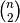 sized vector where n is the number of original observations paired in the distance matrix. The behavior of this function is very similar to the MATLAB linkage function.
A 4 by 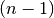 matrix Z is returned. At the
 -th iteration, clusters with indices Z[i, 0] and
Z[i, 1] are combined to form cluster 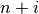. A
cluster with an index less than
-th iteration, clusters with indices Z[i, 0] and
Z[i, 1] are combined to form cluster 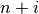. A
cluster with an index less than  corresponds to one of
the original observations. The distance between
clusters Z[i, 0] and Z[i, 1] is given by Z[i, 2]. The
fourth value Z[i, 3] represents the number of original
observations in the newly formed cluster.
corresponds to one of
the original observations. The distance between
clusters Z[i, 0] and Z[i, 1] is given by Z[i, 2]. The
fourth value Z[i, 3] represents the number of original
observations in the newly formed cluster.The following linkage methods are used to compute the distance 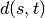 between two clusters 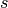 and 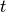. The algorithm begins with a forest of clusters that have yet to be used in the hierarchy being formed. When two clusters and from this forest are combined into a single cluster 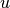, and are removed from the forest, and is added to the forest. When only one cluster remains in the forest, the algorithm stops, and this cluster becomes the root.
A distance matrix is maintained at each iteration. The d[i,j] entry corresponds to the distance between cluster
and
 in the original forest.
in the original forest.At each iteration, the algorithm must update the distance matrix to reflect the distance of the newly formed cluster u with the remaining clusters in the forest.
Suppose there are 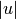 original observations 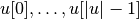 in cluster and 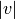 original objects 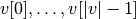 in cluster 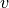. Recall and are combined to form cluster . Let be any remaining cluster in the forest that is not .
The following are methods for calculating the distance between the newly formed cluster and each .
method=’single’ assigns
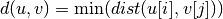
for all points
in cluster and
in cluster . This is also known as the
Nearest Point Algorithm.method=’complete’ assigns
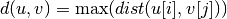
for all points
in cluster u and in
cluster . This is also known by the Farthest Point
Algorithm or Voor Hees Algorithm.method=’average’ assigns
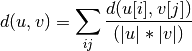
for all points
and where
and are the cardinalities of clusters
and , respectively. This is also called the UPGMA
algorithm. This is called UPGMA.method=’weighted’ assigns
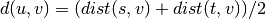
where cluster u was formed with cluster s and t and v is a remaining cluster in the forest. (also called WPGMA)
method=’centroid’ assigns
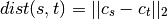
where 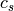 and 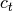 are the centroids of clusters and , respectively. When two clusters and are combined into a new cluster , the new centroid is computed over all the original objects in clusters and . The distance then becomes the Euclidean distance between the centroid of and the centroid of a remaining cluster in the forest. This is also known as the UPGMC algorithm.
method=’median’ assigns math:d(s,t) like the centroid method. When two clusters and are combined into a new cluster , the average of centroids s and t give the new centroid . This is also known as the WPGMC algorithm.
method=’ward’ uses the Ward variance minimization algorithm. The new entry 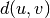 is computed as follows,
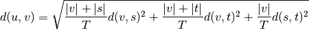
where is the newly joined cluster consisting of clusters and , is an unused cluster in the forest, 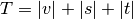, and is the cardinality of its argument. This is also known as the incremental algorithm.
Warning: When the minimum distance pair in the forest is chosen, there may be two or more pairs with the same minimum distance. This implementation may chose a different minimum than the MATLAB version.
Parameters : y : ndarray
A condensed or redundant distance matrix. A condensed distance matrix is a flat array containing the upper triangular of the distance matrix. This is the form that pdist returns. Alternatively, a collection of
 observation vectors in n dimensions may be passed as an
by array.
observation vectors in n dimensions may be passed as an
by array.method : str, optional
The linkage algorithm to use. See the Linkage Methods section below for full descriptions.
metric : str, optional
The distance metric to use. See the distance.pdist function for a list of valid distance metrics.
Returns : Z : ndarray
The hierarchical clustering encoded as a linkage matrix.